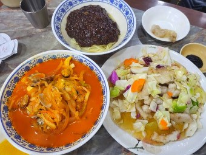

엑스포다리
★★★★★1,282 reviews
@H C
“야경이 아름답고, 차가 다니지 않아 산책하기 좋아요.”
Google review · via Wanderlog
앞에서 추천한 곳들, 실제로 다녀온 사람들은 어떻게 느꼈을까요? 긴 설명 대신 사진 한 장과 솔직한 한 줄만 모았습니다.
“야경이 아름답고, 차가 다니지 않아 산책하기 좋아요.”

“미술관 건물이 예뻤어요. 그림도 괜찮고 공간 자체가 좋았어요.”
“면발이 쫄깃하고 냉우동 육수와 튀김까지 정말 훌륭했어요.”

“유니짜장은 확실히 다르고, 탕수육도 쫄깃해서 맛있어요.”

“깔끔함의 극치. 대전에서 근본 있는 곳이라 불리는 이유를 알겠던 곳.”

“커피도 맛있고 공간과 인테리어가 너무 좋았어요. 가까우면 자주 갈 듯.”

“일몰 시간에 맞춰 오면 좋아요.”

“주차도 무료고 올라가는 길도 재미있고, 야경이 정말 너무 예뻐요.”
* 별점·리뷰 수는 확인 가능한 공개 플랫폼의 현재 표시값을 사용했으며, 플랫폼별 집계 기준은 서로 다를 수 있습니다.